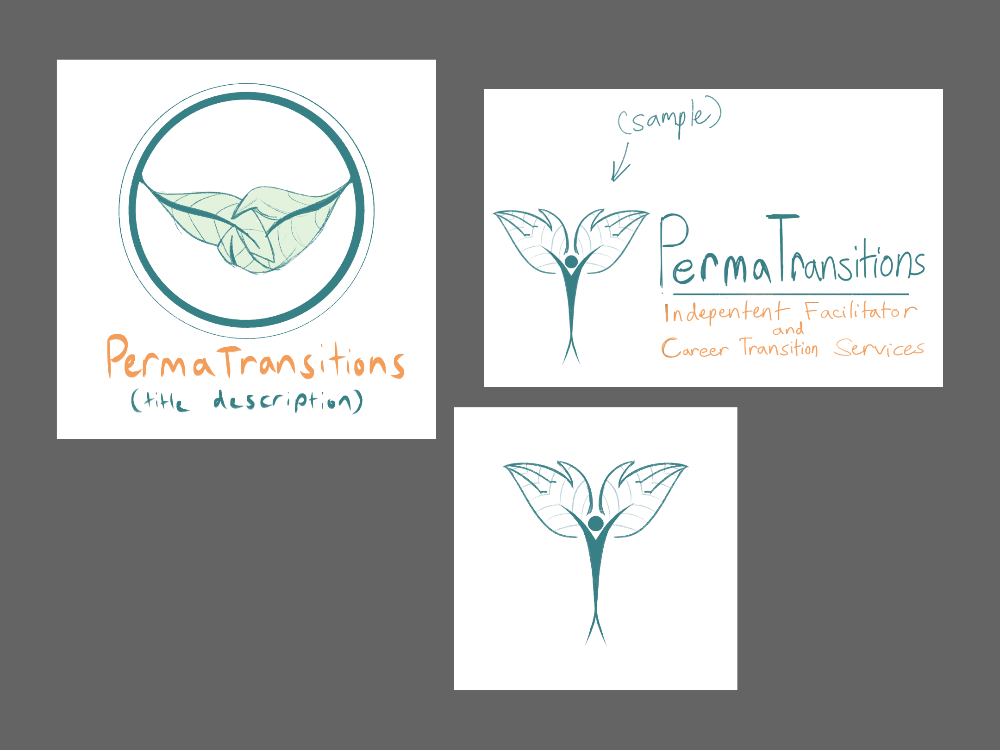
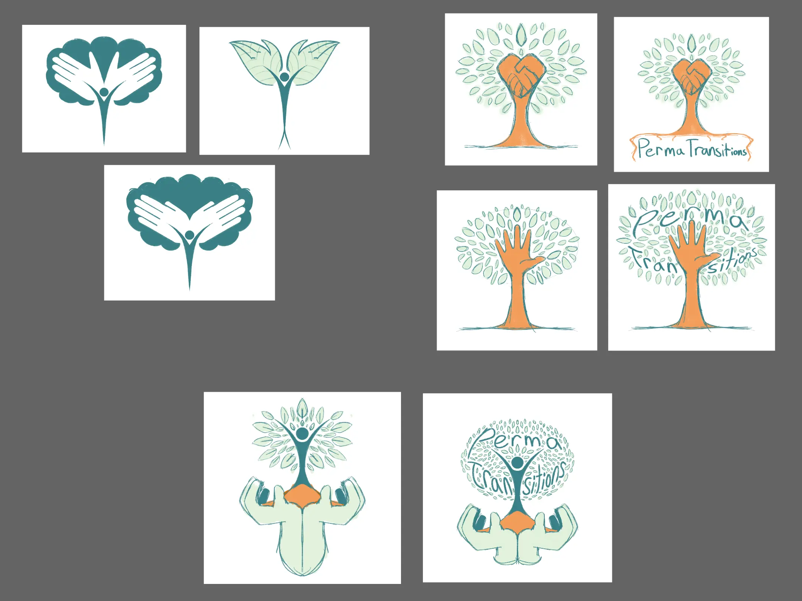
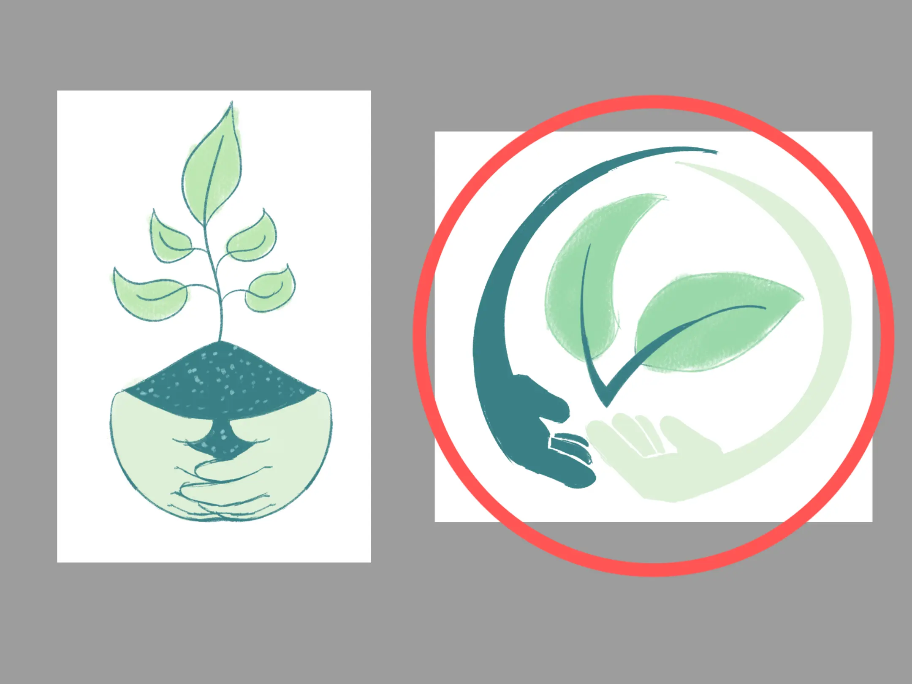
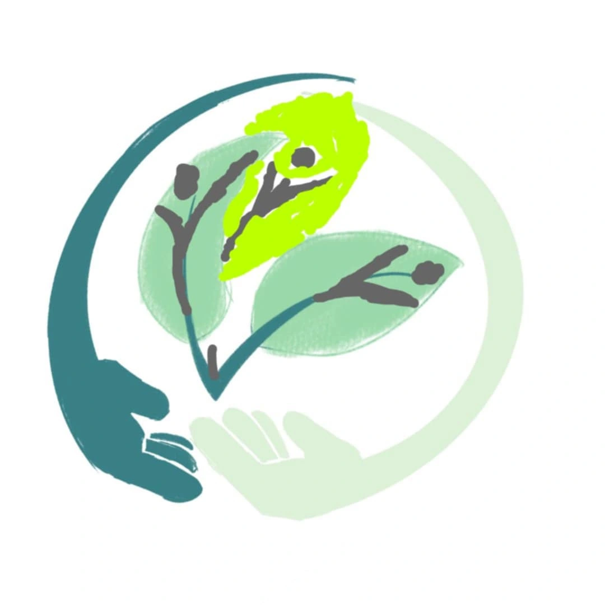
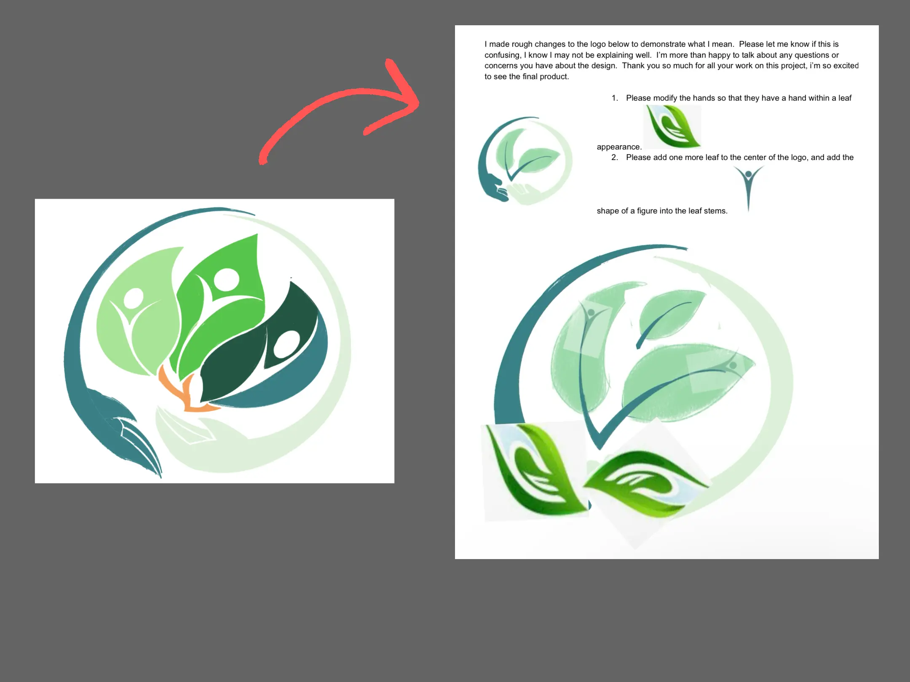
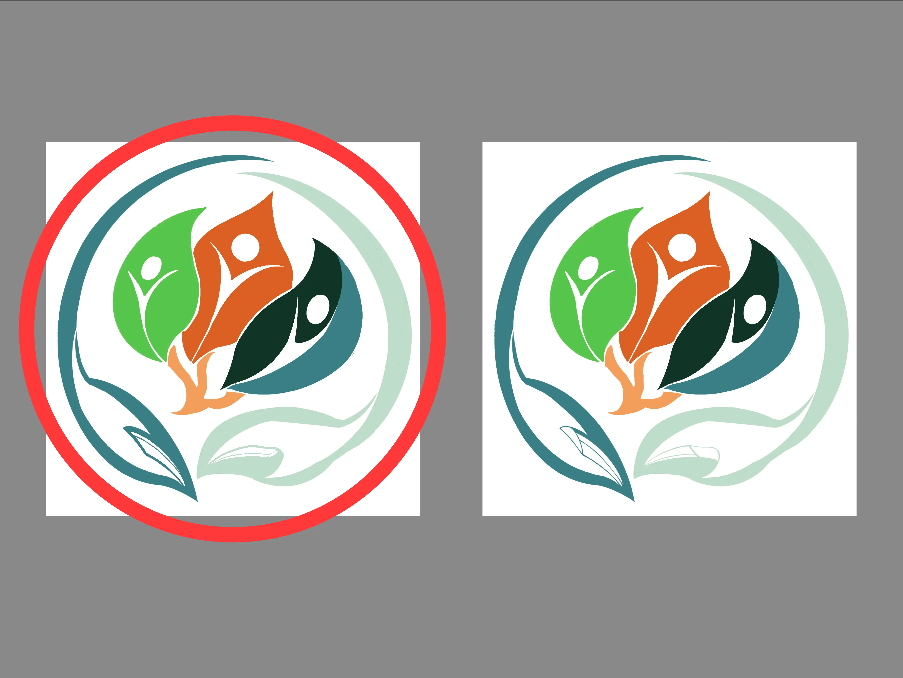

P.Transitions Logo
Tools: Procreate and Adobe Illustrator
Timeline: 3 months (December 2024-March 2025)
Tools: Procreate and Adobe Illustrator
Timeline: 3 months (December 2024-March 2025)
This was one of my first major projects outside of working with Ka Manaʻo. I was asked to redesign the logo for PermaTransitions so it would better reflect the organization’s goals, values, and distinct business model centered on accessible, inclusive, and permaculture-based independent facilitation.
The founders of PermaTransitions were unsatisfied with their original logo and wanted a refreshed identity that clearly communicated the organization’s mission and brand values. With this in mind, I applied what I learned from the Ka Manaʻo logo redesign to develop a more intentional and meaningful visual identity.
To begin, I studied PermaTransitions’ mission, values, and target audience through their business website and conversations with the founders.
PermaTransitions supports people with disabilities of all ages by helping them plan and achieve long-term personal and career goals. Their approach combines emotional, educational, and strength-based care. One of their core philosophies is permaculture, both used as a sustainable system, and a metaphor for how individuals can grow independently with the right support.
To begin, I studied PermaTransitions’ mission, values, and target audience through their business website and conversations with the founders.
With the brand’s values and requested visuals in mind, I researched simple, symbolic logo styles focused on greenery and personal development. I intentionally avoided overly abstract or surreal concepts to ensure the final design remained clear, approachable, and respectful.
Initially, I explored both text-based and symbol-based logos. However, due to time constraints and the need for a distinctive mark, I focused on developing a strong visual emblem rather than relying heavily on typography.
 I kept the original color palette from their previous logo, as it already aligned with themes of growth, trust, and sustainability. I aimed to design a logo using minimal elements to prevent visual clutter.
Most of my sketches centered on tree and plant forms combined with people, hands, and leaves to represent PermaTransitions’ supportive and growth-focused mission. I also explored alternatives without trees, such as a growing plant emerging from soil and hands revolving around a leaf.
After presenting multiple concepts, the founders selected the hands revolving around leaves idea as the strongest direction, with a few refinements.
Once a direction was chosen, the founders requested combining elements from other sketches by using simplified human figures as leaf stems to symbolize individuals growing within the system. They also requested: a range of cool colors from green to blue, orange accents for contrast and focus, and hands that look more leaf-like.
I created a refined draft where the figures were integrated into the leaves, using transparency and subtle shape variation to improve clarity and distinction.
After reviewing the draft, the founders provided additional feedback. They preferred the hands to appear inside the leaves rather than surrounding them and requested the middle leaf be a warmer orange tone to create visual emphasis. Because of this, I slightly changed the leaf roots into a lighter color to contrast the orange hue.
I produced two variations: one with visible palms and one without. In the end, they chose the version without palms for the leaf-like look.
After final approval, I rebuilt the logo in Adobe Illustrator to ensure high-quality vector output. I refined the shapes, spacing, and color balance, especially adjusting the orange leaf so it felt more natural and cohesive within the overall composition.
The PermaTransitions logo is currently in the process of becoming the organization’s official public identity.
More importantly, this project reinforced the importance of designing with thoughtful consideration of a business’s purpose and values. Exploring multiple concepts helped uncover the strongest visual direction, and collaborating closely with the founders demonstrated how client feedback shapes a successful rebrand.
PermaTransitions challenged me to create a simple yet respectful identity that communicates growth, support, and sustainability both visually and meaningfully.